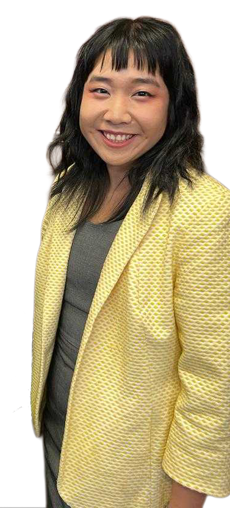

Diane is a Doctor of Philosophy candidate conducting research in astrophysics at Rutgers University, where she studies turbulence, galaxy evolution and star formation in the interstellar medium through theoretical analysis, numerical simulations and the application of novel machine learning techniques.